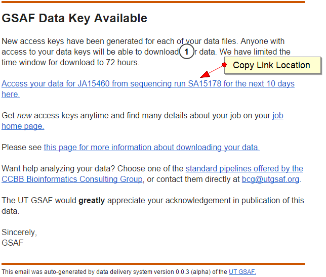
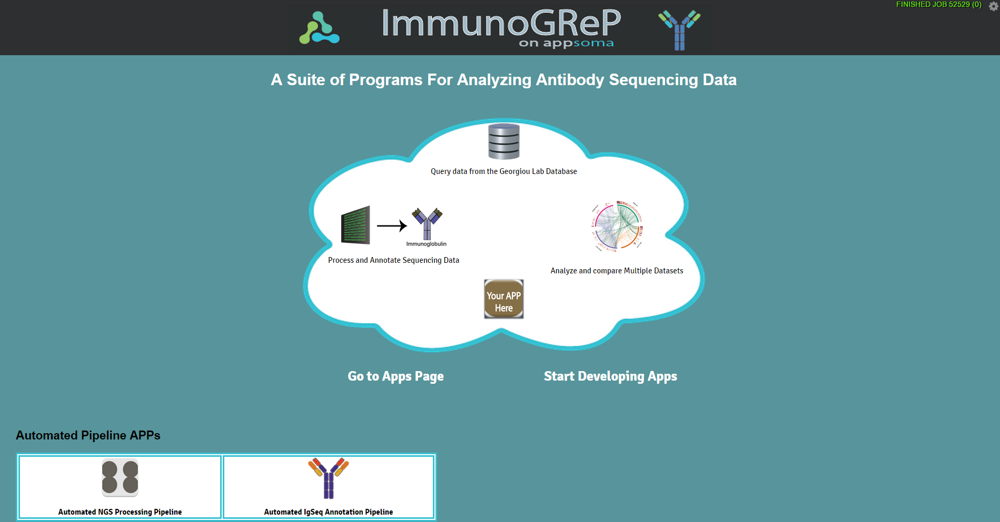
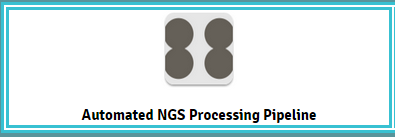
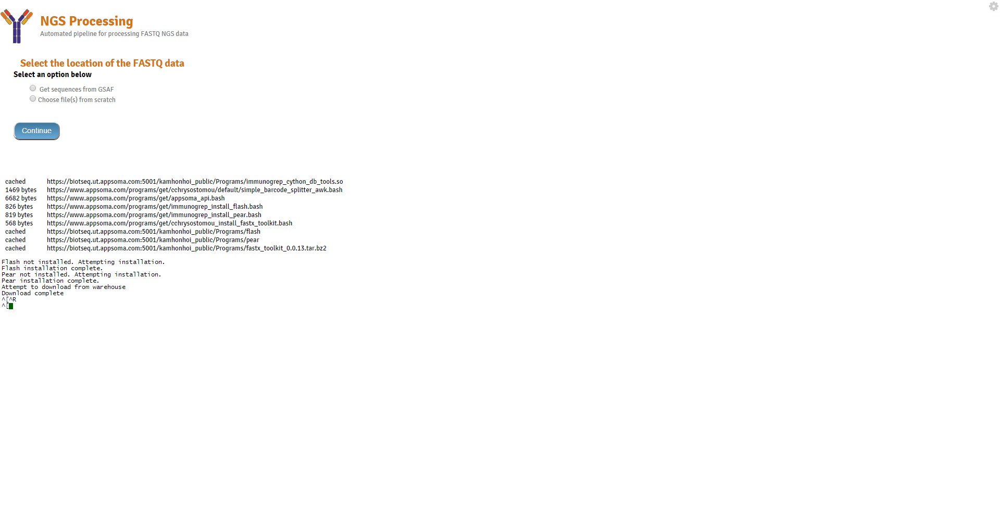

This is a step by step tutorial for running the appsoma pipeline
Important
We’ll be moving away from appsoma. The general way of working with the apps should stay quite familiar however.
Note
Specific to GG Lab only
Important
Before accessing NGS go the lab google docs folder and fill out the form describing your experiment metadata. Then contact Bing. Once you’ve done this your experiment will be stored in the database.
Samples are Submitted to GSAF
Await GSAF results
When GSAF completes you will receive an email containing this
Note
The link in the image will be used in the NGS automated pipeline
You’ll first find yourself at the homepage. This will require you to log into Appsoma using your username and password.
Your first step will be to go to the “Automated NGS Processing Pipeline”
After choosing this option make sure you click “Start now”. Once finished loading you should arrive at this page
Next the files you selected will be grouped. You’ll have the option to select the following options for the groups individually.
{kind=link}
{kind=link}
{kind=link}
{kind=link}
{kind=link}
{kind=link}
{kind=link}